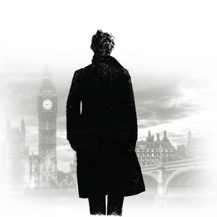

3-LAURISTON BAHÇESİ’NİN GİZEMİ

Dostumun teorilerinin bu taze kanıtlarının beni bayağı şaşırttığını itiraf etmeliyim. Bu hayretimle analiz gücüne olan saygım arttı. Yine de zihnimde tüm olanların beni şaşırtmak için önceden ayarlanmış olabileceği ihtimali saklı duruyordu. Fakat bunu yapmasında ne gibi bir amaç olabileceğini kestiremiyordum. Kafamı çevirdiğimde notu okumayı bitirmişti. Gözlerinde, zihninde bir şeyler döndüğünü gösteren boş ve canlılığını kaybetmiş bir ifade vardı.
“Tüm bunları nasıl oldu da anladın?” diye sordum.
“Neyi anladım?” dedi alınganca.
“Neyi olacak, şu emekli bahriyeliyi.”
“Ivır zıvır konuşacak zamanım yok,” dedi kaba saba bir sesle; ardından gülümsedi. “Kabalığımı bağışla. Düşünce sıramı bozdun da. Ama belki de iyi oldu. Demek sen o adamın emekli bir bahriye çavuşu olduğunu anlamadın, öyle mi?”
“Hayır, gerçekten de anlamadım.”
“Bunu bilmek, neden bildiğimi açıklamaktan daha kolaydı. İki kere ikinin dört ettiğini kanıtlaman istense zorluk yaşayabilirsin, halbuki sonuçtan sonuna kadar eminsindir. Adamın elinin üstündeki çapa dövmesini sokağın ta diğer ucundayken fark etmiştim. Bu, denizle ilgisini gösteriyordu. Yürüyüşü ordu tarzı idi aynı zamanda, favorileri de düzenli kesilmişti. O zaman bahriyeli olduğunu anlayabiliriz. Kendine önem veren ve komuta havası taşıyan bir adamdı. Başını nasıl dik tuttuğunu ve bastonunu nasıl salladığını görmüş olmalısın. Kendinden emin, saygılı, orta yaşlı bir adam olduğu yüzünden anlaşılıyordu. Bunlar da onun eskiden bir çavuş olduğunu anlamamı sağladı.” “Harika!” deyiverdim.
“Yo, gayet sıradan,” dedi Holmes, yine de ifadesinden anladığım kadarıyla hayranlığımdan ve şaşkınlığımdan dolayı memnundu. “Az önce hiç suç işlenmediğinden bahsediyordum ya, yanılmışım. Şuna bak!” Görevlinin getirdiği notu bana doğru attı.
“Ama bu korkunç!” diye haykırdım şöyle bir göz attıktan sonra.
“Normalin dışında bir şeye benziyor,” dedi sakince. “Sesli okuyabilir misin?”
Ona okuduğum mektup şöyleydi:
“Sevgili Bay Sherlock Holmes, Brikston Yolu ‘ndaki Lauriston Bahçesi ‘nde gece üçte kötü bir şey oldu. Bekçilerimizden biri orada sabah iki sularında bir ışık görmüş. Evin boş olduğunu bildiği için kötü bir şey olduğundan şüphelenmiş. Kapı açıkmış ve eşyasız ön odada iyi giyimli, cebindeki kartlarda Enoch J. Drebber, Cleveland, OhayoABD yazan bir beyefendinin cesedini bulmuş. Herhangi bir soygun ya da adamın nasıl öldüğüne dair hiçbir kanıt yok. Odada kan izleri var ama bu adamın hiç yarası yok. Boş eve nasıl geldiğini anlayamadık, olayın geri kalanı da muamma. Eve on ikiden önce gelirseniz beni bulabilirsiniz. Siz gelene kadar her şeyi olduğu gibi bıraktım. Eğer gelemeyecek durumdaysanız size daha ayrıntılı bilgi verebilirim. Büyük bir kibarlık gösterip beni fikirlerinizle aydınlatırsanız çok minnettar olurum.
Saygılarımla TOBIAS GREGSON.”
“Gregson, Scotland Yard’dakilerin en zekisidir,” dedi arkadaşım. “O ve Lestrade çok şanssızlar. İkisi de hızlı ve enerjiktir ama şaşırtıcı şekilde gelenekçilerdir. Birbirlerini de hiç sevmezler. İki ünlü güzel kadının olabileceği kadar kıskançtırlar. Vakaya ikisi de karıştıysa çok eğlenceli olacak.”
Olayı sakince dalgaya alışı beni çok etkilemişti. “Kaybedecek hiç vakit yok,” dedim heyecanla, “gidip sana bir araba çağırayım mı?”
“Gidip gitmeme konusunda emin değilim. Deri ayakkabıları üzerinde öylece duran en tembel şeytan benimdir. Tabii bu tembellik her zaman olmuyor. Gerektiğinde çok dinç de olabilirim.”
“Neden ki? Bu ne zamandır beklediğin bir fırsat.”
“Sevgili dostum, ne önemi var ki benim için? Diyelim olayı çözdüm, tüm itibar Gregson, Lestrade ve diğerlerine gidecek. Çünkü ben resmi bir görevli değilim.”
“Ama yardım etmen için yalvarıyor.”
“Evet. Ondan daha nitelikli olduğumu biliyor, bunu bana söylüyor. Ama üçüncü bir insan söz konusu olduğunda dilini yutuyor sanki. Yine de gidip bir bakabiliriz. İşle kendim ilgilenebilirim. Yeni bir şey bulamazsam çok güldürecekler beni. Hadi, gidelim!”
Paltosunu giydi. Dışarı fırlayışı ilgisiz havasının yerini enerjik bir havanın aldığını gösteriyordu.
“Şapkanı almıyor musun?” dedi.
“Gelmemi mi istiyorsun?”
“Evet, yapacak daha iyi bir şeyin yoksa?” Bir dakika sonra at arabasına binmiş, hızla Brikston Yolu’na doğru sürmeye başlamıştık.
Sisli, bulutlu bir sabahtı. Çatıları, sokaktaki çamurların yansımasını andıran kahverengi bir örtü kaplamış gibiydi. Dostum tam havasındaydı, Stradivarious ve Amati gezintileri yaparak Cremona’nın keman parçalarını mırıldanıyordu. Ben sessizce oturuyordum. Kapalı hava ve aldığımız işin melankolisi benim havamı bozmuştu.
“Bu işe fazla kafanı yormuyorsun galiba,” dedim sonunda Holmes’u müziğin derinliklerinden çıkarıp.
“Henüz bilgi yok,” dedi. “Tüm kanıtlara ulaşmadan teori üretmek büyük bir hatadır. Önyargı yaratır.”
“Bilgiye ulaşmak üzeresin,” dedim parmağımla işaret ederek. “Burası Brikston Yolu, yanılmıyorsam şu da o ev.”
“Evet, doğru. Dur sürücü, dur!” Yüz metre kadar daha vardı ama inmek için ısrar etti. Yolun geri kalanını yürüdük.
3 Numaralı Lauriston Bahçesi her an kötü bir şey olabilecekmiş gibi bir görüntü veriyordu. Sokak boyunca dört evden biri buradaydı. Dört evin ikisi dolu, ikisi boştu. İkincinin, üç katlı, hüzünlü görünen, boş ve kasvetli perdesiz pencereleri vardı. Tabii pencerelerden birinde katarakt gibi belirmiş KİRALIK afişini saymazsak. Sokaktaki evleri birbirlerinden, oraya buraya dağılmış soluk çiçeklerle dolu küçük bahçeler ayırıyordu. Bu bahçeler sarımsı renkte, kil-çakıl karışımı olduğu anlaşılan patikalarla ortadan bölünüyordu. Tüm alan gece boyu yağan yağmur yüzünden çamur içindeydi. Bahçe, tepesinde tahtadan parmaklıkları olan, bir metrelik duvarla sınırlanmıştı, duvarın karşısında da olaya burunlarını sokup, olanlar hakkında bir şeyler öğrenmeye çalışan bir grup meraklı tarafından çevrelenmiş sert ifadeli bir polis memuru dikiliyordu.
Sherlock Holmes’un hızla eve girip olayla ilgili çalışmaya başlayacağını düşünmüştüm. Hiçbir şey bu amacından daha önemli olamazdı. Şu durumda gösteriş gibi gördüğüm kayıtsız bir ifade ile kaldırımda bir aşağı bir yukarı yürümeye başlayıp, boş boş yere, havaya, komşu evlere ve parmaklıklara baktı. Bu incelemesini bitirdikten sonra sakince evin patikasına ya da patikaya uzanmış otlara diyelim, süzüldü. Gözleri hâlâ yerdeydi. İki kere durdu, birinde gülümsediğini, hatta memnuniyetle mırıldandığını gördüm. Patikada birçok ayak izi vardı ama polis buraya bu kadar çok girip çıktığına göre dostumun bir ipucu çıkarmayı nasıl umabildiğini merak ediyordum. Yine de algı yeteneğinin olağanüstü hızıyla ilgili yeterli kanıt görmüştüm, o yüzden de benim göremediğim birçok şey gördüğünden şüphem yoktu.
Uzun boylu, beyaz yüzlü, soluk sarı saçlı bir adam bizi evin kapısında, elinde defteriyle karşıladı. Hızla ileri fırladı ve dostumun elini kapıp taşkınlıkla tokalaştı. “Gelmeniz büyük kibarlık,” dedi, “hiçbir şeye dokunmadım.”
“Burası dışında,” dedi arkadaşım patikayı göstererek. “Buradan bir bufalo sürüsü geçse böylesine bir karışıklık yaratmazdı. Yine de bunun olmasına izin vermeden orayla ilgili işinizi bitirdiğinize şüphem yok, Gregson.”
“Evin içinde yapacak çok şeyim vardı,” dedi dedektif kaçamak bir tavırla. “İş arkadaşım Bay Lestrade burada. Patikayla onun ilgilenmesini bekliyordum.”
Holmes bana baktı ve alaylı bir ifadeyle kaşlarını kaldırdı. “Sen ve Lestrade gibi iki adam burada olduktan sonra bir üçüncü kişiye fazla gerek olmayacak,” dedi.
Gregson tatmin olmuş gibi ellerini ovuşturdu. “Yapabileceğimiz her şeyi yaptık sanırım,” dedi. “Garip bir vaka ama, senin böyle konulara ilgin olduğunu biliyorum.”
“Buraya arabayla gelmediniz, değil mi?” diye sordu Sherlock Holmes.
“Hayır.”
“Peki Lestrade?” “Hayır.”
“O zaman biz içeri girip odaya bakalım.” Önem vermez bir ifadeyle eve doğru ilerlemeye başladı. Gregson şaşkın, onu izledi.
Tahta zeminli, tozlu kısa bir hol mutfağa ve odalara gidiyordu. Holde, biri sağda, diğeri solda olan iki kapı vardı. Birinin haftalardır açılmadığı çok rahat anlaşılıyordu. Diğer kapı yemek odasındaydı, burası gizemli olayın gerçekleştiği odaydı. Holmes içeri girdi, ben de ölüm fikrinin kalbime sapladığı hisle onu takip ettim.
Büyük, kare bir odaydı. İçeride eşya olmadığı için daha da büyük görünüyordu. Adi bir duvar kâğıdı ile kaplanmıştı. Kâğıtta yer yer küf lekeleri, yırtıklar, sökülmüş, sarkmış bölgeler vardı. Arkadaki sarı boya seçilebiliyordu. Kapının karşısında sahte beyaz mermer yerleştirilmiş rafıyla havalı bir şömine, rafın bir köşesinde kırmızı mumdan kalma bir parça bulunuyordu. Odadaki tek pencere o kadar kirliydi ki içerideki her şeye evin her yerini kaplamış olan tozun yoğunlaştırdığı gri, donuk bir renk vererek, puslu, belli belirsiz sızabiliyordu ışık.
Aslında tüm bu ayrıntıları sonradan fark ettim. İlk anda tüm dikkatim yerde uzanmış yatan, korkutucu, hareketsiz, boş bakışını renksiz tavana dikmiş bedendeydi. Kırk üçkırk dört yaşlarında, orta boylu, geniş omuzlu, kıvırcık siyah saçlı, pis sakallı bir adamdı. Ağır bir paltosu, yeleği ve açık renkli bir pantolonu vardı. Yakası ve kollukları tertemizdi. İyi fırçalanmış, düzgün şekilli bir şapka adamın hemen yanında, yerde duruyordu. Elleri sımsıkı kapalıydı ve bir kolu da savrulmuştu. Dirsekten aşağısını kıvırmıştı, can çekişmesi acı dolu geçmiş olmalıydı. Katı yüzünde korku ifadesi asılıydı, insan yüzünde hiç görmediğim bir nefretti bu. Bu küçük alın, kaba burun ve çıkık çene, kötü niyetli ve korku verici bir buruşturma ile birleşince ölü adama, anormal duruşuyla beraber tam bir maymun görüntüsü vermişti. Değişik şekilde ölüler görmüştüm ama hiçbiri bu karanlık ve ürkünç, Londra civarının en işlek caddesine bakan evdeki kadar korkutucu değildi.
Lestrade, o sıska görüntüsü ile tam kapıda bekliyordu. Beni ve dostumu selamladı.
“Bu vaka çok heyecanlı olacak,” dedi. “Şimdiye kadar gördüklerimden çok daha garip. Öyle az şey de görmedim
hani.”
“Hiçbir ipucu yok mu?” dedi Gregson.
“Hiç yok,” diye zırıldadı Lestrade.
Sherlock Holmes cesede yaklaştı ve eğilip dikkatlice inceledi. “Hiç yara olmadığına emin misiniz?” diye sordu etrafa saçılmış kan damlalarını işaret ederek.
“Kesinlikle!” dedi iki dedektif de.
“O zaman bu kan diğer kişiye ait, tahminen katile; tabii bu bir cinayetse. Bu olay bana 1834 yılında Utrecht’te gerçekleşenVan Jansen ölümünü hatırlattı. Vakayı hatırlıyor musunuz, Gregson?”
“Hayır.”
“Okuyup öğrenin, gerçekten. Güneşin altında hiçbir şey yok, her şey o doğmadan önce olup bitmiş.”
Konuşurken çevik parmakları orada, burada her yerde dolanıyor, dokunuyor, bastırıyor, açıyor, inceliyordu. Aynı anda gözleri daha önce de fark ettiğim o uzak ifadeye bürünmüştü. İnceleme o kadar çabuk bitmişti ki, bir başkası bu inceleme sayesinde öğrenilenleri duysa, bu kadar kısa olduğuna inanmazdı. En son, ölü adamın dudaklarını kokladı, sonra da botlarının tabanına baktı.
“Yeri hiç değiştirilmedi, değil mi?” diye sordu.
“İncelememizin gerektirdiğinden daha fazla değil.”
“Onu morga götürebilirsiniz şimdi,” dedi. “Öğrenecek bir şey kalmadı.”
Gregson beraberinde bir sedye ve dört adam getirmişti. Seslenince adamlar odaya girdi ve yabancı, kaldırılıp dışarı taşındı. Adamı kaldırdıkları anda bir yüzük çınlayarak yere düşere, yuvarlandı. Lestrade yüzüğü aldı, meraklı gözlerle baktı.
“Burada bir kadın varmış,” dedi heyecanla. “Bir kadının evlilik yüzüğü bu.”
Konuşurken yüzüğü avucunun içinde kaldırdı. Hepimiz etrafına toplanıp bakındık. Bu yüzüğün bir gelin tarafından takıldığına hiç şüphe yoktu.
“Bu, işleri karıştırır,” dedi Gregson. “Hiç karışık değildi
ya!”
“İşleri basitleştirmediğine emin misin?” dedi Holmes. “Bakarak bir şey öğrenemeyiz. Ceplerinde ne buldunuz?”
“İşte, hepsi burada,” dedi Gregson merdivenin dibindeki bir küme karmaşık eşyayı göstererek. “97163 numaralı, Barraud marka, Londra’da yapılma bir saat. Ağır, sağlam, altın bir zincir. Altın yüzük. Gözleri yakuttan buldok kafası şeklinde olan altın bir broş. Rus derisinden kartlık. İçinde Cleveland’den Enoch J. Drebber’ın kartı var. Kartlığın derisine E. J. D. yazılmış. Cüzdan yok ama ceplerden yedi pound, on üç pens çıktı. Boccaccio’nun Decameron’unun cep baskısı. İlk sayfasında Joseph Stangerson ismi yazıyor. İki mektup, biri E. J. Drebber’a biri de Joseph Stangerson’a.” “Adresler nedir?”
“Amerika Borsası, Strand. Mektup istenene kadar saklanacakmış. İkisi de Guion Buhar Gemileri Şirketi’nden. İki adamın Liverpool’dan kalkacak gemilerinden bahsediyor. Açık ki bu zavallı adam New York’a geri dönmek üzereydi.”
“Bu adamla, Stangerson’la ilgili bir araştırma yaptınız
mı?”
“Ben hemen yaptım,” dedi Gregson. “Tüm gazetelere haber saldım ve adamlarımdan biri de Amerika Borsası’na gitti. Ama henüz dönmedi.”
“Cleveland’e bir şey gönderdiniz mi?”
“Bu sabah telgraf çektik.”
“Nasıl sorular sordunuz?”
“Olayı ayrıntılarıyla anlattık ve her türlü bilginin yararlı olacağını söyledik.”
“Belirli bir şey üzerine soru sormadınız mı?” “Stangerson’u sordum.”
“Başka? Tüm bu vakanın bağlı göründüğü herhangi bir durum yok mu? Başka telgraf çekmeyecek misiniz?”
“Söylemem gereken her şeyi söyledim,” dedi Gregson alıngan bir tonla.
Sherlock Holmes kendi kendine kıkırdadı. Holmes tam bir şey söyleyecekti ki biz holde tüm bu konuşmayı yaparken ön odada bulunan Lestrade yanımıza geldi. Kendini beğenmiş ve tatmin olmuş bir edayla ellerini ovuşturuyordu.
“Bay Gregson,” dedi, “Çok önemli bir keşifte bulundum. Duvarlarda sıkı bir inceleme yapmasaydım gözden kaçabilirdi.”
Ufak adamın konuşurken gözleri parlıyordu. İş arkadaşına karşı puan almış olması dolayısıyla gizli bir sevinci olduğu apaçıktı.
“Buraya gelin,” dedi odaya geri girerek. Korku yaratan cesedin kaldırılmasıyla odanın havası daha açık bir hal almıştı. “Şimdi burada durun!”
Bir kibrit çakıp duvara doğru tuttu.
“Şuna bakın,” dedi zafer edasıyla.
Duvar kâğıdının bazı yerlerde sarktığını söylemiştim. Odanın bu değişik köşesinde büyük bir parça sökülmüş ve kaba sıvadan sarı bir kare ortaya çıkarmıştı. Bu çıplak boşlukta kan kırmızısı harflerle tek bir kelime yazılıydı:
RACHE.
“Buna ne diyorsunuz?” dedi. Dedektif, sahnesini yapan bir gösteri adamı heyecanıyla, “Bu gözden kaçtı çünkü odanın kimsenin bakmayı düşünmediği en karanlık köşesinde. Katil bunu kendi kanıyla yazmış. Bakın duvardan bir leke damlamış. Bu, olayın bir cinayet olduğunu ortaya koyuyor. Neden bu köşe seçildi? Söyleyeyim. Şömine rafının üzerindeki muma bakın. Olay sırasında yanıyordu, şu durumda burası da en karanlık yerine en aydınlık köşeydi.”
“Ne anlama geliyor bu, bulduğun şey?” diye sordu Gregson küçümseyerek.
“Anlamını mı soruyorsun? Söyleyeyim, bunu yazan kişi bir kadın ismi olan ‘Rachel’ yazacaktı ama bir şey bitirmesini engelledi. Bu söylediklerimi yazın bir kenara, çünkü dava çözümlendiğinde Rachel isimli birinin işin içinde olduğunu göreceksiniz. Sizi güldürebilir Bay Sherlock Holmes. Çok akıllı ve kurnaz olabilirsiniz ama eski toprak en iyisidir.”
“Çok affedersiniz!” dedi küçük adamın sinirlerini kahkaha boşalmasıyla tepeye çıkarmış olan dostum. “Bunu hepimizden önce görmüş olmanın ayrıcalığına sahip olabilirsiniz ve dediğiniz gibi bu kesinlikle geçen geceki sırrın diğer iştirakçisi tarafından yazılmış. Bu odayı inceleme fırsatım olmadı daha, izninizle bunu şimdi yapmak istiyorum.”
Konuşurken cebinden bir mezura ve büyük bir büyüteç çıkardı. Bu iki aletle odada sessizce dolaştı, arada bir durdu, bazen diz çöktü ve bir kere de yüzüstü yere uzandı. Kendini o kadar kaptırmıştı ki bizim orada olduğumuzu bile unutmuştu. Çünkü nefeslerinin arasında haykırışlar, iniltiler, ıslıklar, cesaret ve umut yayan haykırışlarla kendi kendine konuşuyordu. Onu izlerken safkan, iyi eğitimli bir av köpeğinin aradığı şeyi bulana kadar bir oraya bir buraya giderkenki hırıltılarını düşünmeden edemedim. İncelemesini yirmi dakika hatta daha fazla sürdürdü. Ara sıra benim göremediğim kanıtlar arasındaki mesafeyi ölçtü, bazen de duvarlara yöneldi. Bir yerden bir tutam toz aldı ve dikkatle cebinden çıkardığı zarfın içine koydu. En son, duvardaki yazıyı, büyüteciyle her harfi tek tek, en ince ayrıntısına kadar inceleyerek etüt etti. Bu da bittikten sonra tatmin olmuş göründü.
Çünkü mezurasını ve büyütecini cebine koydu.
“Dâhiliğin acı çekmeye sınırsız dayanıklılık olduğunu söylüyorlar,” dedi gülümseyerek. “Çok kötü bir tanımlama ama dedektiflik mesleğine uyuyor.”
Gregson ve Lestrade amatör meslektaşlarının hareketlerini büyük bir merak ve küçümseme ile izlemişti. Benim farkına varmaya başladığım, belli ki Sherlock Holmes’un en küçük hareketinin bile kesin ve işe yarar bir sonuçla bağlantılı olduğu gerçeğini anlayamıyorlardı.
“Ne düşünüyorsunuz?” diye sordu ikisi de.
“Size yardım etme cüretinde bulunursam bu davadaki tüm itibarınızı elinizden almış olurum,” dedi arkadaşım. “Şu ana kadarki işiniz çok iyi, o kadar ki başka birinin karışması ayıp olur.” Sesinde tam bir iğneleme ve küçümseme tonu vardı. “Araştırmalarınızın nasıl gittiğini bana bildirirseniz,” diye devam etti, “size yapabileceğim her türlü yardımı yapmaktan mutluluk duyacağım. Şimdi cesedi bulan bekçiyle konuşmak istiyorum. Adını ve adresini verebilir misiniz?”
Lestrade not defterine bakarak, “John Rance,” dedi. “Şu anda iş başında değil. Onu Audley Meydanı, 46 numarada bulabilirsiniz. Kennington Parkı Girişi’nde.”
Holmes adresi not etti.
“Gelin, Doktor,” dedi, “gidip bekçiye bakalım. Size de vakada yardımcı olacak bir şey söyleyeyim,” dedi sonra dedektiflere dönerek. “Bir cinayet söz konusu ve bu cinayet bir erkek tarafından işlenmiş. Boyu 1.80 santimden fazla, eski püskü giyiniyormuş, kare uçlu botları varmış ve Tiriçirapalli purosu içiyormuş. Buraya kurbanıyla beraber dört tekerli, öndeki bir nalı yeni, diğer üçü eski olan tek atın çektiği bir araba ile gelmiş. Her halükârda katilin kırmızı yüzlü olduğunu söyleyebilirim, ayrıca sağ elinin tırnakları da uzunmuş. Birkaç işaret ama size yardımları dokunabilir.”
Lestrade ve Gregson kuşkulu gözlerle birbirlerine baktılar.
“Eğer bu adam öldürüldüyse, bu nasıl yapılmış?” dedi Lestrade.
Sherlock Holmes, “Zehirlenmiş,” dedi kısa ve sert bir cevapla ve büyük adımlarla yürümeye başladı. “Bu arada, diğer bir şey de Lestrade,” dedi tam kapıda arkasını dönüp: “ ‘Rache’ intikam kelimesinin Almanca karşılığıdır; bu yüzden Bayan Rachel’i arayarak zaman kaybetmeyin.”
Tüm bunları tokat gibi fırlattıktan sonra iki rakibi açık ağızlarıyla gerisinde bırakıp gitti.